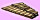

English - Kannada Dictionary
ಇಂಗ್ಲಿಷ್ - ಕನ್ನಡ ನಿಘಂಟು
(ಬಹುವಚನ Xs ಅಥವಾ X’s).
- ಇಂಗ್ಲಿಷ್ ವರ್ಣಮಾಲೆಯ 24ನೆಯ ಅಕ್ಷರ.
- (ಬೀಜಗಣಿತ, ಸಾಮಾನ್ಯವಾಗಿ $x$) ಮೊದಲನೆಯ ಅಜ್ಞಾತ ಮೊತ್ತದ ಸಂಕೇತ.
- (ರೇಖಾಗಣಿತ) ಪ್ರಥಮ ಸ್ಥಾನ ನಿರ್ದೇಶ, ನಿರ್ದೇಶಾಂಕ (coordinate).
- ಅಜ್ಞಾತ ಅಥವಾ ಅನಿರ್ದಿಷ್ಟ ವ್ಯಕ್ತಿ, ಸಂಖ್ಯೆ, ಮೊದಲಾದವು.
- (ರೋಮನ್ ಸಂಖ್ಯೆಯಾಗಿ) 10 (ಉದಾಹರಣೆಗೆ XI = 11, XV=15, XX=20, XL = 40, XC = 90).
- ಸ್ಥಾನಸೂಚಕ ಗುರುತು: X marks the spot X ಗುರುತು ಸ್ಥಳವನ್ನು ಸೂಚಿಸುತ್ತದೆ.
- ತಪ್ಪು (ಸೂಚಿಸುವ) ಗುರುತು.
- ಚುಂಬನ, ಓಟು, ಅನಕ್ಷರಸ್ಥನ ಸಹಿ,ಮೊದಲಾದವನ್ನು ಸೂಚಿಸುವ ಗುರುತು. ${\rm A}4=297\times 210$ ಮಿಲಿಮೀಟರ್. ${\rm A}5=210\times 148$ ಮಿಲಿಮೀಟರ್.
(ಚಲನಚಿತ್ರಗಳ ವಿಷಯದಲ್ಲಿ) ವಯಸ್ಕರಿಗೆ ಮಾತ್ರ ತಕ್ಕುದಾದುದು ಎಂಬುದನ್ನು ಸೂಚಿಸುವ ಸಂಕೇತ.

(ಹ್ರೆಂಚಿನಿಂದ ಬಂದ -u ಇಂದ ಅಂತ್ಯವಾಗುವ ಶಬ್ದಗಳ) ಬಹುವಚನ ರಚಿಸುವಲ್ಲಿ ಪ್ರಯೋಗ, ಉದಾಹರಣೆಗೆ beaux, tableaux.
ಸಾಂತಿಕ್ ಆಮ್ಲದ ಲವಣ ಅಥವಾ ಎಸ್ಟರು.
ನಸುಹಳದಿಯ.
ಸಾಂತಿಕ್ ಆಮ್ಲ; ${\rm OCS}_2{\rm H}$ ಪರಮಾಣುಗುಚ್ಫವಿರುವ, ಸಾಮಾನ್ಯವಾಗಿ ಅಸ್ಥಿರವಾದ ಯಾವುದೇ ಕಾರ್ಬನಿಕ್ ಆಮ್ಲ.
ಚಂಡಿ; ಗಯ್ಯಾಳಿ ಹೆಂಡತಿ ಅಥವಾ ಸಿಡುಕಿನ ಹೆಂಗಸು (ಸಾಕ್ರೆಟೀಸನ ಹೆಂಡತಿಯ ಹೆಸರಿನಿಂದ).
(ಬಹುವಚನ xanthomas ಅಥವಾ xanthomata ಉಚ್ಚಾರಣೆ ಸಾನ್ತೋಮಟ). (ರೋಗಶಾಸ್ತ್ರ)
- ಹಳದಿಮಚ್ಚೆ ರೋಗ; (ಕುತ್ತಿಗೆ ಮೊದಲಾದವುಗಳ ಮೇಲೆ) ಅಲ್ಲಲ್ಲಿ ಹಳದಿ ಕಲೆಗಳುಂಟಾಗುವ ಚರ್ಮರೋಗ.
- ಅಂಥ ಕಲೆ, ಮಚ್ಚೆ.
ಪೀತದ್ರವ್ಯ; ಹಣ್ಣೆಲೆಹಳದಿ; ಪತ್ರಪೀತ; ಶರತ್ಕಾಲದ ಕೆಲವು ಎಲೆಗಳಲ್ಲಿ ಹಳದಿಬಣ್ಣವುಂಟು ಮಾಡುವ, ಆಮ್ಲಜನಕವನ್ನುಳ್ಳ, ಕ್ಲೋರೋಹಿಲ್ ಜೊತೆಗಿರುವ ಹಲವಾರು ಕೆರಟನಾಯ್ಡ್ (carotenoid)ಗಳಲ್ಲಿ ಒಂದು.
(ಜೀವವಿಜ್ಞಾನ) ಎಕ್ಸ್ ಕ್ರೋಮಸೋಮ್; ಹೆಣ್ಣು ಜೀವಕೋಶಗಳಲ್ಲಿ ಜೋಡಿಯಾಗಿರುವ, ಗಂಡು ಜೀವಕೋಶಗಳಲ್ಲಿ ವೈ (Y) ಕ್ರೋಮಸೋಮ್ ಜೊತೆಗೆ ಇರುವ, ಲೈಂಗಿಕ ಕ್ರೋಮಸೋಮು.
ex dividend.

{kind=link}
(ಜೀವವಿಜ್ಞಾನ) ಮಿಶ್ರಗರ್ಭಧಾರಣೆಯ; ಬೆರಕೆ ಬಸಿರಿನ; ಅಡ್ಡಬಸಿರಿನ.
(ಜೀವವಿಜ್ಞಾನ) ಸಂಕರ, ಮಿಶ್ರ ಗರ್ಭಧಾರಣ; ಬೆರಕೆ ಬಸಿರು; ಅಡ್ಡಬಸಿರು; ಒಂದು ಜಾತಿ ಜೀವಿಯ ಹೆಣ್ಣು ಇನ್ನೊಂದು ಜಾತಿ ಜೀವಿಯ ಗಂಡಿನೊಡನೆ ಕಲೆತು ಸಂತಾನೋತ್ಪತ್ತಿಯಲ್ಲಿ ತೊಡಗುವುದು.
(ಭೂವಿಜ್ಞಾನ) ಅನ್ಯಶಿಲೆ; ಸಾಮಾನ್ಯವಾಗಿ ಪಕ್ಕದ ಶಿಲಾರಾಶಿಯೊಂದರಿಂದ ಬಂದು ಸೇರಿಕೊಂಡಿರುವ, ಭಿನ್ನ ಬಗೆಯ ಶಿಲೆಯ ತುಂಡು.
(ರಸಾಯನವಿಜ್ಞಾನ) ಸಿನಾನ್; ಭೂಮಿಯ ವಾತಾವರಣದಲ್ಲಿರುವ ಜಡಾನಿಲಗಳಲ್ಲಿ ಅಥವಾ ವಿರಳಾನಿಲಗಳಲ್ಲಿ ಒಂದಾದ, ಹ್ಲೂರಸೆಂಟ್ ದೀಪಗಳಲ್ಲಿ ಬಳಸುವ, 54 ಪರಮಾಣು ಸಂಖ್ಯೆಯ, 131 ಪರಮಾಣು ತೂಕದ, ವರ್ಣ, ವಾಸನೆಗಳಿಲ್ಲದ, ಭಾರವಾದ ಅನಿಲಧಾತು.
ಪರಕೀಯ, ವಿದೇಶೀ – ದ್ವೇಷಿ; ಹೊರಗಿನಿಂದ ಬಂದವರನ್ನು ಕಂಡರೆ ಆಗದ ವ್ಯಕ್ತಿ.
ಅನ್ಯದ್ವೇಷ; ಪರಕೀಯರ, ವಿದೇಶೀಯರ ಬಗ್ಗೆ ದ್ವೇಷ.
ಅನ್ಯದ್ವೇಷದ; ಪರಕೀಯರನ್ನು ದ್ವೇಷಿಸುವ.
(ಸಸ್ಯವಿಜ್ಞಾನ) ಸಿರಾಂಥಿಮಮ್; ಒಣಗಿದ, ಬಹುಕಾಲವಿರುವ ಸಂಯುಕ್ತಪುಷ್ಪಗಳನ್ನು ಬಿಡುವ, ಸಸ್ಯಗಳ ಕುಲ ಅಥವಾ ಆ ಕುಲದ ಗಿಡ.
(ಪರಿಸರವಿಜ್ಞಾನ) ಶುಷ್ಕ; ತೇವವಿಲ್ಲದ; ನಿರಾರ್ದ್ರ; ಒಣ ಪರಿಸ್ಥಿತಿಯ ಅಥವಾ ಅದಕ್ಕೆ ಸಂಬಂಧಿಸಿದ.
ಶುಷ್ಕಲೇಖ; ಶುಷ್ಕಲೇಖನ ವಿಧಾನದಿಂದ ಪಡೆದ ಪ್ರತಿ.
ಶುಷ್ಕಲೇಖನದ.
ಶುಷ್ಕಲೇಖನದಂತೆ; ಶುಷ್ಕಲೇಖನ–ರೀತಿಯಲ್ಲಿ, ವಿಧಾನದಿಂದ.
ನಕಲು ತೆಗೆಯಬೇಕಾದ ಪತ್ರದ ಅಥವಾ ದಾಖಲೆಯ ಬಿಂಬದಿಂದ ಬರುವ ಬೆಳಕಿಗೆ ಒಡ್ಡಿದ ಮೈಮೇಲೆ ವಿದ್ಯುದಾವೇಶವಿರುವ ಕಡೆಯಲ್ಲೆಲ್ಲ ಕಪ್ಪು ಅಥವಾ ಬಣ್ಣದ ಪುಡಿ ಅಂಟಿಕೊಳ್ಳುವ ಏರ್ಪಾಟಿರುವ, ಒಣನಕಲು ಅಥವಾ ಪ್ರತಿ ತಯಾರಿಕಾ ವಿಧಾನ.
ಮರುಸಸ್ಯ; ಶುಷ್ಕಸಸ್ಯ; ಅತ್ಯಂತ ಶುಷ್ಕ ವಾತಾವರಣದಲ್ಲಿ, ಮುಖ್ಯವಾಗಿ ಮರುಭೂಮಿಯಲ್ಲಿ, ಬೆಳೆಯಬಲ್ಲ ಸಸ್ಯ.
(ಸಸ್ಯದ ವಿಷಯದಲ್ಲಿ) ಶುಷ್ಕಪ್ರಿಯ; ಅತ್ಯಂತ ಒಣ ಪರಿಸರಕ್ಕೆ ಒಗ್ಗಿರುವ ಅಥವಾ ಪರಿಸರದಲ್ಲಿ ಬೆಳೆಯುವ.

Proprietary name
- (ಒಂದು ರೀತಿಯ) ಶುಷ್ಕರೇಖನ ರೀತಿಯಲ್ಲಿ ಪ್ರತಿ ತೆಗೆಯುವುದು; ಜೆರಾಕ್ಸ್ ಪ್ರತಿ ತೆಗೆಯುವುದು.
- ಜೆರಾಕ್ಸ್ ಪ್ರತಿ; ಶುಷ್ಕ ರೇಖನ ಪ್ರತಿ.
- ಸೆರಾಕ್ಸ್ ಅಥವಾ ಶುಷ್ಕಲೇಖನ ಯಂತ್ರ.
ಸೆರಾಕ್ಸ್ ಪ್ರತಿ, ನಕಲು ತೆಗೆ; ಶುಷ್ಕರೇಖನ ಪ್ರತಿ ಮಾಡು.
(ಬಹುವಚನ ಅದೇ ಅಥವಾ Xhosas).
- ಕೌಸಾ ಭಾಷೆ; ದಕ್ಷಿಣ ಆಹ್ರಿಕದ ಕೇಪ್ ಪ್ರಾಂತದ ಬಂಟು ಜನರ ಭಾಷೆ.
- ಕೌಸಾ (ಜನಾಂಗದವನು).
(ದಕ್ಷಿಣ ಆಹ್ರಿಕದ ಕೇಪ್ ಪ್ರಾಂತದ) ಬಂಟು ಅಥವಾ ಕೌಸ ಜನರ ಅಥವಾ ಅವರ ಭಾಷೆಯ.
(ಗ್ರೀಕ್ ವರ್ಣಮಾಲೆ) ಹದಿನಾಲ್ಕನೆಯ ಅಕ್ಷರ, ಗೆ, $(\Xi,\xi)$.
ಲ್ಯಾಟಿನ್ ಭೂತಕೃದಂತಗಳಿಂದ ನಾಮಪದಗಳನ್ನು ರಚಿಸುವ ಉತ್ತರಪ್ರತ್ಯಯ, ಉದಾಹರಣೆಗೆ inflexion, fluxion.
(ಜೀವವಿಜ್ಞಾನ) ಖಡ್ಗಾಕಾರದ; ಕತ್ತಿಯಾಕಾರದ.
(ಅಂಗರಚನಾಶಾಸ್ತ್ರ) ಎದೆಮೂಳೆಯ ಕೆಳತುದಿಯ ದುರ್ಮಾಂಸ, ಗಂತಿ ಬೆಳೆವಣಿಗೆ ಪ್ರಕ್ರಿಯೆ.
(ಬಹುವಚನ xoana, ಉಚ್ಚಾರಣೆ ಸೋಅನ). (ಗ್ರೀಕ್ ಪ್ರಾಚೀನ ಚರಿತ್ರೆ) (ಸ್ವರ್ಗದಿಂದ ಕೆಳಕ್ಕೆ ಬಿದ್ದಿದ್ದೆಂದು ಭಾವಿಸಿದ್ದ) ಆದಿಕಾಲದ, ಸಾಮಾನ್ಯವಾಗಿ ಮರದ, ದೇವತಾ–ವಿಗ್ರಹ, ಪ್ರತಿಮೆ.
(x-ray ಎಂದೂ ಬಳಕೆ).
- (ಬಹುವಚನದಲ್ಲಿ) ಕ್ಷ ಕಿರಣಗಳು; ಎಕ್ಸ್ ಕಿರಣಗಳು; ನೇರಳಾತೀತ ಕಿರಣಗಳಿಗಿಂತ ಕಡಮೆ ತರಂಗದೂರ ಉಳ್ಳ, ಕಾರ್ಬನ್, ಹೈಡ್ರೊಜನ್, ಆಕ್ಸಿಜನ್, ನೈಟ್ರೊಜನ್ಗಳಂಥ ಕಡಮೆ ಪರಮಾಣು ತೂಕದ ಧಾತುಗಳಿಂದಾದ, ಘನ ಪದಾರ್ಥದ ಮೂಲಕ ಹಾದುಹೋಗಬಲ್ಲ ವಿದ್ಯುತ್ಕಾಂತ ತರಂಗಗಳು.
- ಎಕ್ಸ್ರೇ ಚಿತ್ರ; ಕ್ಷ ಕಿರಣಚಿತ್ರ; ದೇಹದ ಯಾವುದೇ ಭಾಗವನ್ನು ಎಕ್ಸ್ ಕಿರಣಗಳಿಗೊಡ್ಡಿ ಫಿಲ್ಮ್ ಮೇಲೆ ಪಡೆದ, ಮೂಳೆ ಮುಂತಾದ ಅಧಿಕ ಪರಮಾಣು ತೂಕದ ಧಾತುಗಳಿಂದ ರೂಪುಗೊಂಡ ದೇಹಭಾಗಗಳನ್ನು ಎತ್ತಿ ತೋರಿಸುವ ಚಿತ್ರ.
(x-ray ಎಂದೂ ಬಳಕೆ). (ದೇಹದ ಯಾವುದೇ ಭಾಗದ ವಿಷಯದಲ್ಲಿ)
- ಎಕ್ಸ್-ರೇ ಅಥವಾ ಕ್ಷ ಕಿರಣಗಳಿಗೆ – ಒಡ್ಡು.
- ಎಕ್ಸ್-ರೇ ತೆಗೆ; ಕ್ಷ ಕಿರಣಚಿತ್ರ ತೆಗೆ.
ಎಕ್ಸ್-ರೇ, ಕ್ಷ ಕಿರ ಖಗೋಳಶಾಸ್ತ್ರ; ಖಾಗೋಳಿಕ ಕಾಯಗಳಿಂದ ಬರುವ ಎಕ್ಸ್ ಕಿರಣಗಳನ್ನು ಗ್ರಹಿಸುವ ಮೂಲಕ ಖಾಗೋಳಿಕ ಮಾಹಿತಿಯನ್ನು ಪಡೆದು ಅಭ್ಯಸಿಸುವ, ಖಗೋಳವಿಜ್ಞಾನ ಶಾಖೆ.
ಎಕ್ಸ್-ರೇ, ಕ್ಷಕಿರ – ಸ್ಫಟಿಕವಿಜ್ಞಾನ; ಸ್ಫಟಿಕಗಳಲ್ಲಿ ಕ್ರಮಬದ್ಧವಾಗಿ ಅಳವಡಿಸಿಕೊಂಡಿರುವ ಪರಮಾಣುಗಳು ತಮ್ಮ ಮೇಲೆ ಎರಗುವ ಎಕ್ಸ್ ಕಿರಣಗಳನ್ನು ವಿವರ್ತಿಸುವವಾದ್ದರಿಂದ ಅದನ್ನು ಉಪಯೋಗಿಸಿಕೊಂಡು ಸ್ಫಟಿಕಗಳ ಅಧ್ಯಯನ ಮಾಡುವ ಸ್ಫಟಿಕವಿಜ್ಞಾನ ಶಾಖೆ.
ಎಕ್ಸ್-ರೇ, ಕ್ಷ ಕಿರಣ–ನಳಿಕೆ; ಇಲೆಕ್ಟ್ರಾನ್ಗಳನ್ನು ವೇಗೋತ್ಕರ್ಷದಿಂದ ಹೆಚ್ಚು ಶಕ್ತಿಶಾಲಿಗಳನ್ನಾಗಿ ಮಾಡಿ, ಅವನ್ನು ಲೋಹದ ಗುರಿವಸ್ತುವಿಗೆ ಸಂಘಟ್ಟಿಸುವುದರಿಂದ ಕ್ಷ ಕಿರಣಗಳನ್ನು ಉತ್ಪತ್ತಿ ಮಾಡುವ ಸಾಧನ.
(ಸಸ್ಯಗಳ, ಮರದ) ಊತಕ.
(ರಸಾಯನವಿಜ್ಞಾನ) ಸೆಲೀನ್; ಮರ ಮೊದಲಾದವುಗಳಿಂದ ದೊರೆಯುವ, ಬೆನ್ಸೀನ್ ಅಣು ವಿನಲ್ಲಿನ ಎರಡು ಹೈಡ್ರೊಜನ್ ಪರಮಾಣುಗಳ ಸ್ಥಾನದಲ್ಲಿ ಎರಡು ಮೀಥೈಲ್ ಗುಚ್ಫಗಳನ್ನು ಆದೇಶಿಸಿದಾಗ ಉಂಟಾಗುವ, ಮೂರು ಸಮಾಂಗಿ ಹೈಡ್ರೊಕಾರ್ಬನ್ಗಳಲ್ಲಿ ಒಂದು.

ದಾರು ಫಲ(ವೃಕ್ಷ); ದಾರುವಿನಂಥ ಗಟ್ಟಿಯಾದ ಹಣ್ಣು(ಬಿಡುವ ಮರ).
ದಾರು ಫಲ(ವೃಕ್ಷ)ದ ಅಥವಾ ಅದಕ್ಕೆ ಸಂಬಂಧಿಸಿದ.

ದಾರುಚಿತ್ರ; ಮರದ ಎಳೆಗಳನ್ನು ಕೃತಕವಾಗಿ ರೂಪಿಸಿದ ಅಲಂಕಾರ ಚಿತ್ರ, ಮುಖ್ಯವಾಗಿ ಹಳೆಯದು.
- ದಾರುಚಿತ್ರಣ; ಮರದ ಎಳೆಗಳನ್ನು ಕೃತಕವಾಗಿ ರೂಪಿಸಿದ ಅಲಂಕಾರ ಮಾದರಿ.
- ದಾರು ಮುದ್ರಣ; ಮುದ್ರಣದಲ್ಲಿ ಮರದಚ್ಚುಗಳ ಬಳಕೆ.
Proprietary name ಸೆಲೊನೈಟ್; ಒಂದು ಬಗೆಯ ಸೆಲ್ಯುಲಾಯ್ಡ್.
(ಕ್ರಿಮಿಗಳ ವಿಷಯದಲ್ಲಿ) ಮರ ಕೊರೆಕ; ಮರವನ್ನು ಕೊರೆದು ತಿನ್ನುವ.
ಕಾಷ್ಠ ತರಂಗ; ಸೆಲಹೋನ್; ಕ್ರಮಿಕ ವ್ಯತ್ಯಾಸದ ಉದ್ದದ ಮರದ ಅಥವಾ ಲೋಹದ ಪಟ್ಟಿಗಳನ್ನು ಜೋಡಿಸಿ, ಚಿಕ್ಕ ಮರದ ಬಡಿಗೆಯಿಂದ ಯಾ ಬಡಿಗೆಗಳಿಂದ ಬಡಿದು ನುಡಿಸುವ, ಒಂದು ಬಗೆಯ ವಾದ್ಯ. 
{kind=link}
ಸೆಲಹೋನಿನ ಅಥವಾ ಅದಕ್ಕೆ ಸಂಬಂಧಿಸಿದ.
ಕಾಷ್ಠತರಂಗ – ವಾದಕ, ನುಡಿಸುವವನು.
(ಬಹುವಚನ xysti ಉಚ್ಚಾರಣೆ ಸಿಸ್ಟೈ).
- (ಪುರಾತನ ಗ್ರೀಸ್) ಚಾವಣಿಯ ಮುಖಮಂಟಪ; ವ್ಯಾಯಾಮಗಾರರು ಸಾಧನೆ ಮಾಡುತ್ತಿದ್ದ, ಚಾವಣಿಯುಳ್ಳ ಮುಖಮಂಟಪ.
- (ರೋಮನ್ ಪ್ರಾಚೀನ ಚರಿತ್ರೆ) ತೋಟದ ನಡಗೆದಾರಿ; ಉಪವನ ಪಥ; ಎತ್ತರಿಸಿದ, ತಿರುಗಾಟದ ರಸ್ತೆ.